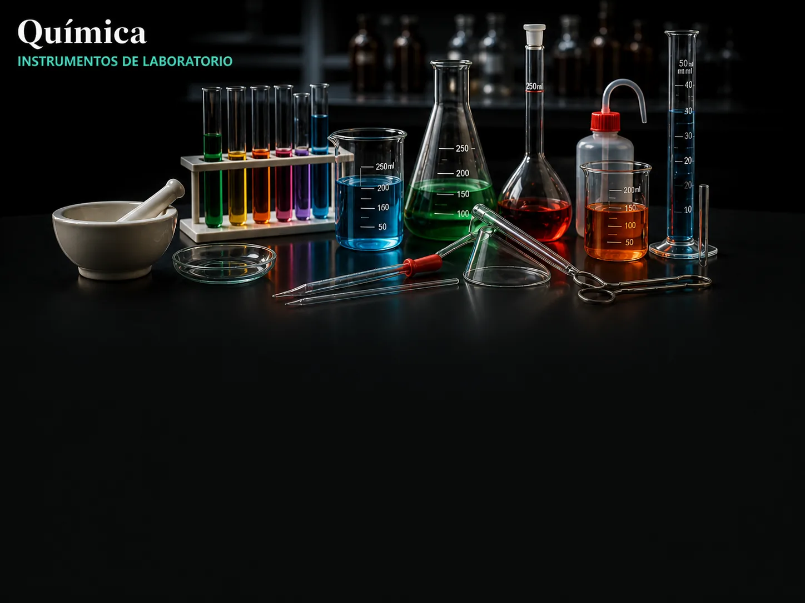
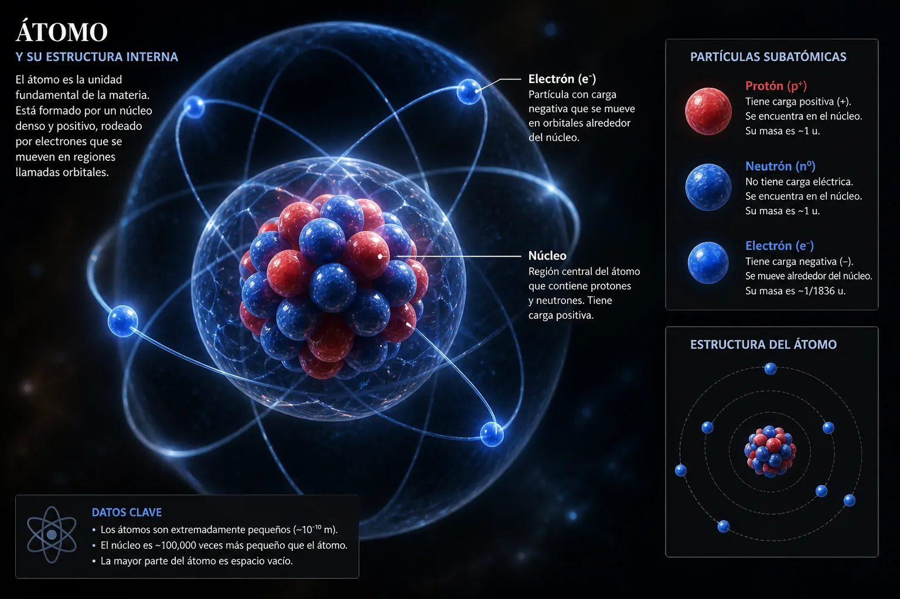
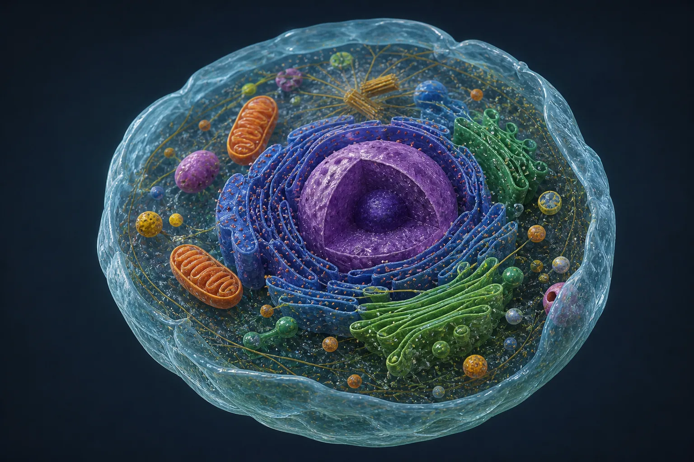

Unidades de Ciencias Naturales
Explora los contenidos interactivos, experimentos de laboratorio y recursos didácticos de las tres ramas principales para 1° Año de Secundaria.

Química
Los materiales y sus transformaciones. Estudio de las propiedades de la materia, la clasificación de mezclas y los métodos físicos de separación. Análisis del agua como sustancia y recurso social.

Física
Estudio del cambio, la energía y el movimiento. Análisis de las fuerzas y transformaciones energéticas, calor y ondas, y el fascinante modelo del Sistema Solar con su dinámica orbital.

Biología
Interacción y diversidad de los seres vivos. Comprende el estudio celular, las plantas como productores autótrofos, la ecología de poblaciones y el cuerpo humano integrado con ESI y EAI.